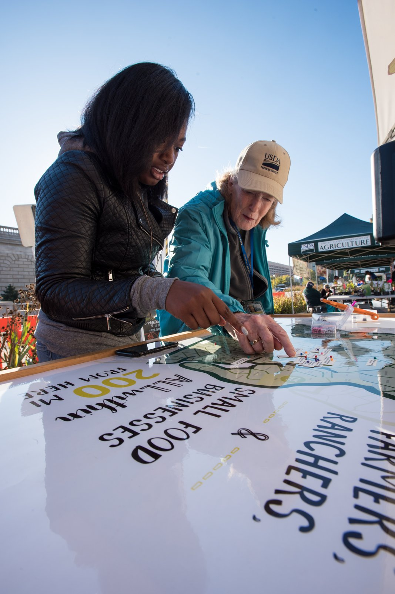

In the hierarchy of luxury carryall materials, genuine shearling occupies an unmatched tactile pinnacle. Unlike conventional leather goods where hides are depilated during liming, shearling represents a biologically unified matrix where dense wool fibers remain anchored in their native dermal collagen follicle beds. In this monograph, we investigate the cellular mechanics of high-altitude Merino fleece and the delicate tannery chemistry required to stabilize wool without embrittling the suede corium.
1. Cellular Morphology of Merino Wool Keratin and Bilateral Crimp
The extraordinary cloudlike springiness and thermal resilience of premium shearling derives from the microscopic architecture of individual wool fibers. Each fiber is comprised predominantly of alpha-keratin proteins stabilized by inter-molecular disulfide cystine bonds.
What distinguishes Alpine Merino sheepskin from lowland wool is its bilateral cortical asymmetry. The fiber core contains two distinct cellular halves: the orthocortex, characterized by lower sulfur content and rapid moisture sorption, and the paracortex, which contains high-density disulfide cross-links and resists swelling. As ambient atmospheric humidity fluctuates, differential swelling forces each wool fiber into a three-dimensional helical spiral, creating natural microscopic crimps numbering up to thirty per centimeter. This dense helical crimping creates millions of insulating micro-air pockets that prevent wool compaction under heavy loads.
2. Natural Lanolin Ester Chemistry: Nature's Hydrophobic Shield
A critical botanical and biological advantage of natural sheepskin is the presence of unrefined lanolin (cholesteryl and aliphatic esters) secreted by sebaceous glands surrounding every hair follicle. Lanolin forms a micro-molecular protective sheath across each wool cuticle scale.

Because lanolin is inherently hydrophobic yet vapor-permeable, it repels liquid water droplets and melted snowflakes, causing them to bead effortlessly upon the fleece surface without wetting the underlying hide. Concurrently, the interior cortical cells absorb up to thirty percent of their own weight in ambient water vapor without feeling damp to the touch, establishing an organic microclimate that shields tote contents from seasonal weather extremes.
3. Comparative Matrix: Sheepskin Tannage Systems & Hair Retention
Preserving both pristine white wool and supple caramel suede requires careful calibration of tannery chemistries:
| Tanning Methodology | Active Chemical Agent | Wool Whiteness / Luster | Suede Corium Suppleness | Environmental Profile |
|---|---|---|---|---|
| Organic Pit Vegetable Tanning | Chestnut, quebracho, mimosa catechins | Warm unbleached ivory / ecru | Supple, heavy drape, develops rich patina | 100% biodegradable; zero heavy metals |
| Synthetic Mineral Glutaraldehyde | Synthetic dialdehyde polymer cross-linkers | Pure stark optical white | Medium firmness, washable performance | Petrochemical synthesis; moderate footprint |
| Industrial Basic Chromium Sulfate | Chromium(III) sulfate coordination salts | Tends toward bluish-gray tint unless dyed | Spongy, lightweight, high heat resistance | Heavy metal sludge hazards; strictly restricted |
| Traditional Brain & Tallow Smoke | Emulsified animal lipids & wood smoke | Golden amber rustic coloration | Velvety chamois softness, water-sensitive | Historical artisanal practice; low volume |
4. The Tannery Dilemma: Tanning the Hide Without Damaging the Fleece
Conventional shoe and belt leather tanning relies on aggressive alkalizing liming baths (calcium hydroxide and sodium sulfide) to dissolve hair follicles completely. For shearling, this step is rigorously avoided. The challenge lies in tanning the reverse corium layer with plant polyphenols without staining the pristine ivory wool fibers.
In our partner Tuscan tannery in Santa Croce sull'Arno, pelts undergo paddle vat processing where the pH is buffered strictly between 4.2 and 4.8. Natural condensed tannins derived from chestnut and mimosa wood bind selectively to the dermal collagen fibers. Controlled tallow fat emulsions are introduced to coat each dermal bundle, ensuring the finished caramel suede remains butter-soft while the fleece retains its natural loft and elasticity without becoming brittle.
5. Precision Ironing, Shearing, and Suede Buffing
Following drying, the wool undergoes mechanical carding and heated rotary ironing at 140°C with specialized luster-enhancing organic conditioners. This process untangles natural crimp clumping, transforming rustic fleece into an ultra-plush velvet shearling pile.
The pile is then shaved to a precise uniform height—twenty-two millimeters for our structured carryalls and thirty-five millimeters for cozy weekend totes. Finally, the grain side is buffed against fine rotary pumice stones to produce a velvety suede nap with a delicate writing effect that shifts pleasingly beneath fingertips.
6. Frequently Asked Questions on Shearling Material Science
7. Micro-Climate Thermal Buffering in Alpine Altitudes
A standout biomechanical advantage of high-pile Merino shearling is its remarkable ability to regulate micro-climatic humidity and temperature differentials. Because natural wool contains millions of microscopic coiled crimp springs per square decimeter, the fiber matrix traps an insulating cushion of ambient dead air that acts as a natural thermal barrier.
When moving from freezing mountain winds into heated salon interiors, the fleece slowly releases absorbed humidity without condensing water onto delicate leather linings or interior personal electronics. Furthermore, the natural elasticity of the dermal collagen hide absorbs external concussive shocks, providing protective cushioning for laptops, cameras, and optical equipment carried within. By respecting these biological dynamics, our atelier creates carryalls that combine pure sensory indulgence with uncompromising utilitarian resilience.